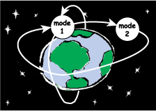

|
 |
HyVisual 2.2-beta-3 is a block-diagram editor and simulator for
hybrid systems.
Hybrid systems are systems with continuous-time dynamics, discrete events, and discrete mode changes. This visual modeler supports construction of hierarchical hybrid systems. It uses a block-diagram representation of ordinary differential equations (ODEs) to define continuous dynamics. It uses a bubble-and-arc diagram representation of finite state machines to define discrete behavior. |
HyVisual 2.2 is a runtime only release of a subset of Ptolemy II.
For more information about HyVisual, see the HyVisual Documentation
HyVisual is available in several formats: